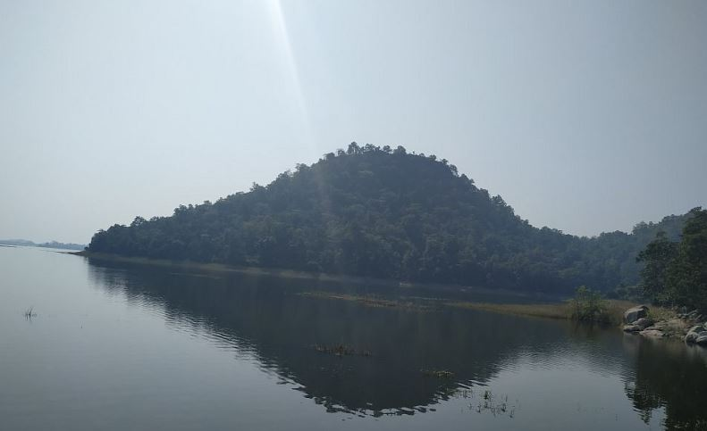
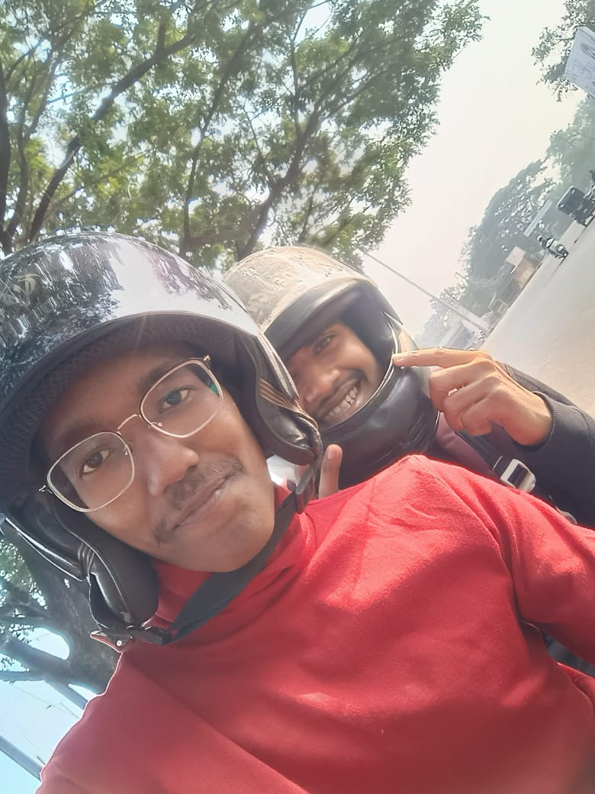

📅 Date: 22 December 2024 | With My Friends
Kunwara Bhivsen Fort is located near the Pench river, about 29 km from Nagpur. It's peaceful and surrounded by nature.
We started from Nagpur early in the morning and reached Kunwara Bhivsen village in about 1 hour. The road journey was smooth and fun with friends.
After reaching the village, we walked up the hill to see the fort ruins. It was exciting and a little tiring, but the view was amazing.
There is a small temple dedicated to Bhivsen Baba. We did darshan and sat peacefully there for some time.
It was a short but memorable trip. I enjoyed a lot with my friends and felt peaceful in nature.
Written by: Deepak Tripathi